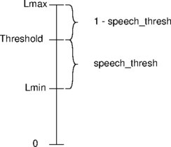

The following functions are provided by the Prosody speech processing API:
| API call | W | Description |
|---|---|---|
| sm_add_input_cptone() | Define a call-progress tone that can be listened for on an input channel | |
| sm_add_input_freq_coeffs() | Define frequency coefficients used to recognise tones on input channel | |
| sm_add_input_tone_set() | Define a set of simple tones that can be listened for on an input channel | |
| sm_add_output_freq() | Expand repertoire of frequencies which may be used as components in user defined tones generated on output channels | |
| sm_add_output_tone() | Define a simple tone that may be generated on an output channel | |
| sm_adjust_catsig_module_params() | Adjust signal categorisation algorithm parameter | |
| sm_adjust_input_tone_set() | Alter tone detection accept/reject characteristics | |
| sm_ans_listen_for() | Detect ANS and ANSam V.8 tones | |
| sm_beep_listen_for() | Detect a beep | |
| sm_catsig_listen_for() | Invoke signal categorisation algorithm | |
| sm_catsig_signalling_hint() | Provide signalling derived hint to signal categorisation algorithm | |
| sm_channel_set_input_threshold() | Modify criterion which causes a channel to be ready for reading | |
| sm_channel_set_output_threshold() | Modify criterion which causes a channel to be ready for writing | |
| sm_condition_adjust() | Adjust input conditioning | |
| sm_condition_adjust_span() | Adjust span of input conditioning | |
| sm_condition_input() | Condition input signal with, for example, an echo cancellation algorithm | |
| sm_condition_reinit() | Re-initialise conditioning of input signal | |
| sm_conf_prim_abort() | Abort a conference. | |
| sm_conf_prim_add() | Add channel input to set whose sum forms conference output. | |
| sm_conf_prim_adj_input() | Adjust input parameters for channel that is a conference participant. | |
| sm_conf_prim_adj_input_settings() | Adjust input settings for channel that is a conference participant. | |
| sm_conf_prim_adj_output() | Adjust conference output level. | |
| sm_conf_prim_adj_tracking() | Adjust parameters controlling active speaker detection | |
| sm_conf_prim_attach() | Prepare channel ready to be used as conference input. | |
| sm_conf_prim_clone() | Prepare channel ready to be used as conference output with identical inputs to another conference output channel. | |
| sm_conf_prim_config_activity_reporting() | Configure the active input reporting of a conference | |
| sm_conf_prim_detach() | Undo preparation for conferencing of channel input. | |
| sm_conf_prim_info() | Retrieve conference information (eg. active speakers) | |
| sm_conf_prim_leave() | Remove input channel from set whose sum forms conference output. | |
| sm_conf_prim_start() | Prepare channel ready to be used as conference output. | |
| sm_conf_prim_status() | Determine conference status | |
| sm_conf_prim_stop() | Stop a conference. | |
| sm_discard_recognised() | This call discards all buffered but as yet uncollected recognised items | |
| sm_get_recognised() | Poll for recognised digit, tone, or call-progress tone | |
| sm_get_recorded_data() | Collect another buffer of recorded data from a channel | |
| sm_listen_for() | Set repertoire of digits, simple tones, and call-progress tones to listen for on channel | |
| sm_onhook_listen_for() | Detect a analogue line going on-hook | |
| sm_play_cptone() | Generate call-progress tone on a channel | |
| sm_play_cptone_abort() | Abort generation of call-progress tone | |
| sm_play_cptone_status() | Determine status of previously initiated call-progress tone generation | |
| sm_play_digits() | Dial DTMF digits on a channel | |
| sm_play_digits_status() | Determine status of previously initiated DTMF dialling | |
| sm_play_tone() | Generate simple tone on a channel | |
| sm_play_tone_abort() | Abort generation of tone | |
| sm_play_tone_list() | Plays multiple tones on a channel | |
| sm_play_tone_list_abort() | Abort generation of tone list | |
| sm_play_tone_list_phase_reverse() | Set the phase reversal period of generate tones | |
| sm_play_tone_list_status() | Determine status of previously initiated tone list generation | |
| sm_play_tone_status() | Determine status of previously initiated tone generation | |
| sm_put_audio_data() | Put small buffer of audio data to channel set up for low latency replay | |
| sm_put_last_replay_data() | Provide last buffer to indefinite replay | |
| sm_put_replay_data() | Provide another buffer of data to replay | |
| sm_record_abort() | Prematurely terminate recording of data from channel | |
| sm_record_agc_adjust() | Adjust AGC during recording. | |
| sm_record_agc_adjust_settings() | Adjust AGC settings during recording. | |
| sm_record_start() | Initiate recording on channel | |
| sm_record_status() | Determine recording status of channel | |
| sm_replay_abort() | Prematurely terminate replay | |
| sm_replay_adjust() | Adjust volume/speed parameters for replay | |
| sm_replay_start() | Initiate process of replaying data to channel | |
| sm_replay_status() | Determine replay status | |
| sm_reset_input_cptones() | Un-define all call-progress tones currently recognisable by the module | |
| sm_add_input_vocab() | D | Add new word to vocabulary |
| sm_asr_listen_for() | D | Set vocabulary of words to listen for on a channel |
| sm_reset_input_vocabs() | D | Discard module's current vocabulary |
| sm_set_sidetone_channel() | D | Nominate for an input channel, the output channel a fraction of whose output signal will be assumed to form part of the input channel signal |
Key to W column:
| D | Deprecated |
|---|
This document is also available as separate pages for each function.
int sm_add_input_cptone(struct sm_input_cptone_parms *cptonep)
typedef struct sm_input_cptone_parms {
tSMModuleId module; /* in */
tSM_INT state_count; /* in */
struct sm_cptone_state {
tSM_INT freq_id; /* in */
tSM_INT maximum_cadence; /* in */
tSM_INT minimum_cadence; /* in */
} states[kSMMaxCPToneStates]; /* in */
tSM_INT id; /* in */
} SM_INPUT_CPTONE_PARMS;
Adds an additional call-progress tone to the repertoire of such tones recognised by the designated module.
The new call-progress tone is defined by a sequence of (up to
kSMMaxCPToneStates) call-progress tone
states.
In order for a signal to be recognised as the new call-progress
tone, each of the call-progress tone states must be satisfied in
turn.
Each state is satisfied when, on the channel being processed, a signal is detected which has a duration of between minimum_cadence and maximum_cadence milliseconds and a frequency designated by freq_id. The actual frequency designated by freq_id is with respect to the tone set selected as the base set of frequencies for use by call-progress tone detection. By default this is tone set 1 (see Prosody speech processing: pre-loaded input tones), if another base set of frequencies is required then this may be specified by a tone set id specified when invoking sm_reset_input_cptones().
The parameter id is a value between 1 and 255 specified by the application, prior to calling the function. It is used to identify the recognised call-progress tone, and will be returned by sm_get_recognised() whenever the defined call-progress tone is being listened for and is recognised on an input channel. Distinct call-progress tones may be assigned the same id so that, for instance, two alternative call-progress tones could return the same id.
See Prosody speech processing: pre-loaded call-progress tones, for list of call-progress tones supported by default and their ids.
See Prosody speech processing: Notes on adding call-progress tones for further information on adding call-progress tones to be recognised.
This call can only be made when no channel is allocated on the given module.
The maximum duration of a tone for call-progress tone detection
is over 50 days. It is not possible to detect tones longer than
this. To match a continuous tone, specify ~0U (i.e.
the maximum possible unsigned int value) as the maximum
duration. This special value allows a tone to match before it
finishes (normally detection must wait until the tone finishes
so that it can check if the duration exceeded the permitted
maximum).
states[0], and the first
must be in states[state_count-1] - they are in the
opposite order in this array to the order they occur in the
incoming signal.
0 if call completed successfully, otherwise a standard error such as:
int sm_add_input_freq_coeffs(struct sm_input_freq_coeffs_parms *freqcoeffp)
typedef struct sm_input_freq_coeffs_parms {
tSMModuleId module; /* in */
double upper_limit; /* in */
double lower_limit; /* in */
tSM_INT id; /* out */
} SM_INPUT_FREQ_COEFFS_PARMS;
This call may be used to add a pair of input frequency coefficients (upper_limit, lower_limit specified in Hz) to the repertoire of those supported by the given module. These coefficients are used to specify upper and lower rejection frequencies for tone recognition. On return id will be set to an identifier for the new input frequency coefficient pair.
See Prosody speech processing: pre-loaded input tones for list of predefined frequency coefficients.
See Prosody speech processing: Details of tone detection algorithm for more details on choosing upper and lower rejection limits for a given input frequency.
0 if call completed successfully, otherwise a standard error such as:
int sm_add_input_tone_set(struct sm_input_tone_set_parms *tonesetp)
typedef struct sm_input_tone_set_parms {
tSMModuleId module; /* in */
tSM_INT band1_first_freq_coeffs_id; /* in */
tSM_INT band1_freq_count; /* in */
tSM_INT band2_first_freq_coeffs_id; /* in */
tSM_INT band2_freq_count; /* in */
double req_third_peak; /* in */
double req_signal_to_noise_ratio; /* in */
double req_minimum_power; /* in */
double req_twist_for_dual_tone; /* in */
tSM_INT id; /* out */
} SM_INPUT_TONE_SET_PARMS;
This call may be used to define an additional set of simple input tones (recognisable on any input channel) for the specified module module.
The new set of input tones is defined with respect to two sets of possible component frequencies, band 1 and band 2, and various other parameters req_third_peak, req_signal_to_noise_ratio, req_minimum_power and req_twist_for_dual_tone.
Band 1 is comprised of band1_freq_count coefficients whose ids range from: band1_first_freq_coeffs_id to band1_first_freq_coeffs_id + band1_freq_count - 1
Similarly Band 2 is comprised of band2_freq_count coefficients whose ids range from: band2_first_freq_coeffs_id to band2_first_freq_coeffs_id + band2_freq_count - 1
The new set of input tones will consist of all those tones that have a component frequency that is within the limits for a frequency coefficient pair taken from band 1, and another that is within the limits for a frequency coefficient pair taken from band 2.
For example, if band 1 was defined as the set of input frequency coefficient ids {0,1,2,3} and band 2 was defined as {4,5,6,7}, then the defined input tone set would be:
| { | <0,4>, | <0,5>, | <0,6>, | <0,7>, | |
| <1,4>, | <1,5>, | <1,6>, | <1,7>, | ||
| <2,4>, | <2,5>, | <2,6>, | <2,7>, | ||
| <3,4>, | <3,5>, | <3,6>, | <3,7> | } |
On return id will be set to an identifier for the new set of input tones. This id may be used as a parameter to sm_listen_for() in order to specify the new set of input tones as those to be recognised on an input channel.
If single tones (as opposed to dual tones) are required to be detected, then either band1_freq_count or band2_freq_count should be set to zero. In this case the corresponding band1_first_freq_coeffs_id or band2_first_freq_coeffs_id is ignored.
See Prosody speech processing: pre-loaded input tones for list of predefined input frequency coefficient pairs, and for list of predefined input tone sets. See Prosody - Details of Tone Detection Algorithm for an explanation of the other parameters to this call.
0.1 indicates that the third frequency must
be no stronger than a tenth the power of the second frequency.
0.25 means that the detected signal must be more
than a quarter of the total received power.
10 means that the stronger must be no more than
ten times the power of the weaker.
0 if call completed successfully, otherwise a standard error such as:
int sm_add_output_freq(struct sm_output_freq_parms *freqp)
typedef struct sm_output_freq_parms {
tSMModuleId module; /* in */
double freq; /* in */
double amplitude; /* in */
tSM_INT id; /* out */
} SM_OUTPUT_FREQ_PARMS;
This call may be used to add a component frequency to the repertoire of those supported by the given module. On return id will be set to an identifier for the new component frequency. This id may be used as a parameter to sm_add_output_tone() when defining new output tones supported by the module.
The frequency freq must be specified in Hz and be in the range from 150 Hz to 3600 Hz. The amplitude amplitude must be specified in dBm0 (according to CCITT G.711) and be in the range from -35 dBm0 to +3 dBm0.
See Prosody speech processing: pre-loaded output tones, for list of predefined component frequencies.
The database of tones is in the API library which is part of the application. Consequently, a very large number of tones can usually be added before running out of resources.
0 if call completed successfully, otherwise a standard error such as:
int sm_add_output_tone(struct sm_output_tone_parms *tonep)
typedef struct sm_output_tone_parms {
tSMModuleId module; /* in */
tSM_INT component1_id; /* in */
tSM_INT component2_id; /* in */
tSM_INT id; /* out */
} SM_OUTPUT_TONE_PARMS;
This call may be used to add a new output tone to the repertoire of those supported by the given module. The new tone will be a dual tone having two components identified by component1_id and component2_id where these each refer to either a predefined component frequency or one defined by the application through a call to sm_add_output_freq(). On return id will be set to an identifier for the new tone. This identifier may be used in calls to sm_play_tone() and sm_play_cptone() to refer to the newly defined output tone.
See Prosody speech processing: pre-loaded output tones, for list of predefined component frequencies, and for list of predetermined simple output tones.
0 if call completed successfully, otherwise a standard error such as:
int sm_adjust_catsig_module_params(struct sm_adjust_catsig_module_parms *catsigp)
typedef struct sm_adjust_catsig_module_parms {
tSMModuleId module; /* in */
tSM_INT catsig_alg_id; /* in */
enum kSMBESPCatSigParam {
kSMBESPCatSigParamF_ln_nrg_coeff=2,
kSMBESPCatSigParamF_min_Lmin,
kSMBESPCatSigParamF_Lmin_decay,
kSMBESPCatSigParamF_speech_thresh,
kSMBESPCatSigParamF_debounce,
kSMBESPCatSigParamI_min_valid_period_count,
kSMBESPCatSigParamI_min_valid_count,
kSMBESPCatSigParamI_glitch_count,
kSMBESPCatSigParamI_qualify_count,
kSMBESPCatSigParamI_alter_duration,
kSMBESPCatSigParamI_max_valid_tone_cnt,
kSMBESPCatSigParamI_min_valid_speech_cnt,
kSMBESPCatSigParamI_threshold_samp_cnt,
kSMBESPCatSigParamI_delay_time,
kSMBESPCatSigParamI_period_time,
kSMBESPCatSigParamI_min_off_count,
kSMBESPCatSigParamI_min_period_off,
kSMBESPCatSigParamF_initial_Lmax,
} parameter_id; /* in */
union {
double fp_value; /* in */
tSM_INT int_value; /* in */
} parameter_value; /* in */
} SM_ADJUST_CATSIG_MODULE_PARMS;
Adjust parameter for signal categorisation algorithm.
Invoking the call will change a single signal categorisation parameter for the given signal categorisation algorithm, that parameter being identified by the value supplied parameter_id.
The new parameter value must be set in either the fp_value or int_value element of the parameter_value union according to the parameter type.
Adjusting parameters for the signal categorisation algorithm requires extreme care and should be attempted only under the guidance of Aculab support. For more background information on how the algorithm works, please refer to Prosody application note: Live Speaker Detection
ParamF).
ParamI).
0 if call completed successfully, otherwise a standard error such as:
int sm_adjust_input_tone_set(struct sm_adjust_tone_set_parms *tonesetp)
typedef struct sm_adjust_tone_set_parms {
tSMModuleId module; /* in */
tSM_INT tone_set_id; /* in */
enum kAdjustToneSet {
kAdjustToneSetFPParamId3rdPeak,
kAdjustToneSetFPParamIdSNRatio,
kAdjustToneSetFPParamIdMinPower,
kAdjustToneSetFPParamIdTwist,
kAdjustToneSetIntParamIdMinOnTime,
kAdjustToneSetIntParamIdMinOffTime,
kAdjustToneSetFPParamIdStartFreq,
kAdjustToneSetFPParamIdStopFreq,
} parameter_id; /* in */
union {
double fp_value; /* in */
tSM_INT int_value; /* in */
} parameter_value; /* in */
} SM_ADJUST_TONE_SET_PARMS;
This call may be used to alter the tone detection characteristics of a pre-loaded or user defined (through sm_add_input_tone_set()) input tone set for the specified module module.
The tone set to be modified is identified through the tone_set_id parameter, this must either be the identifier for one of the pre-loaded input tone sets (see Prosody speech processing: pre-loaded input tones), or an identifier returned by sm_add_input_tone_set().
Invoking the call will change a single input tone set parameter, that parameter being identified by the value supplied parameter_id.
The new parameter value must be set in either the fp_value or int_value element of the parameter_value union according to the parameter type.
See Prosody - Details of Tone Detection Algorithm for more details on how adjusting these input tone set parameters affects tone recognition.
In previous versions, the values of kAdjustToneSetIntParamIdMinOnTime and kAdjustToneSetIntParamIdMinOffTime were not independent, that is setting one value also set the other. These values are now independent. However, if only one value is >= 64 then that value is used for both the on and off times in order to retain compatibility with applications that only set one value.
For firmware versions where the on and off times are not independent, the kAdjustToneSetIntParamIdMinOnTime is used (subject the the above compatibility constraint).
...MinDuration64 detection modes.
...MinDuration64 detection modes.
0 if call completed successfully, otherwise a standard error such as:
int sm_ans_listen_for(struct sm_ans_listen_for_parms *listenp)
typedef struct sm_ans_listen_for_parms {
tSMChannelId channel; /* in */
enum kSMANSMode {
kSMANSModeDisable,
kSMANSModeDetect,
} detection_mode; /* in */
} SM_ANS_LISTEN_FOR_PARMS;
This call controls detection of the ITU-T V.8 tones ANS and ANSam, which are used in the preliminary stages of modem negotiation.
When a tone is recognised, the recognition event associated with the channel is set and the application can then retrieve a tone identifier for the recognised tone by calling sm_get_recognised().
The module ansam is required by this call.
0 if call completed successfully, otherwise a standard error such as:
int sm_beep_listen_for(struct sm_beep_listen_for_parms *listenp)
typedef struct sm_beep_listen_for_parms {
tSMChannelId channel; /* in */
tSM_INT min_duration; /* in */
double upper_limit; /* in */
double lower_limit; /* in */
} SM_BEEP_LISTEN_FOR_PARMS;
A beep will be recognised if it lasts for at least min_duration milliseconds and the frequency is between lower_limit and upper_limit.
When a beep is recognised, the recognition event associated with the channel is set and the application can then retrieve the details for the recognised beep by calling sm_get_recognised().
Setting min_duration to zero disables the detection.
The modules td and beepdet are required.
0 if call completed successfully, otherwise a standard error.
int sm_catsig_listen_for(struct sm_catsig_listen_for_parms *listenp)
typedef struct sm_catsig_listen_for_parms {
tSMChannelId channel; /* in */
enum kBESPCatSigAlg {
kBESPCatSigAlgLiveSpeaker=1,
kBESPCatSigAlgLiveSpeakerTone,
kBESPCatSigAlgLiveSpeakerToneReport,
kBESPCatSigAlgLiveSpeakerPlugin,
} catsig_alg_id; /* in */
tSM_INT catsig_hint_param; /* in */
tSM_INT catsig_timeout; /* in */
tSM_INT catsig_config_length; /* in */
char *catsig_config_data; /* in */
tSM_INT abort_catsig_alg; /* in */
} SM_CATSIG_LISTEN_FOR_PARMS;
If this call is invoked with abort_catsig_alg set to zero and catsig_alg_id set to identifier for a signal categorisation algorithm then this call invokes a signal categorisation algorithm on the given channel input. Once enough of the signal has been processed in order to classify it into a definite category then the application is notified and it can then retrieve an indication of the signal category by calling sm_get_recognised().
If a recognition event has been previously associated with channel (see sm_channel_set_event()), then the driver will notify the application with that event whenever a signal has been categorised.
When invoked with catsig_timeout of zero, if the signal cannot be categorised, then no event will occur. An application should normally maintain its own timeout to execute some action if no categorisation event occurs within a reasonable time.
When
catsig_alg_id
of kBESPCatSigAlgLiveSpeakerPlugin is specified and call is invoked with positive
catsig_timeout
then if signal cannot be categorised within specified timeout, a recognition event will occur
and subsequent
sm_get_recognised()
call will give indication that signal categorisation has timed out. See algorithm
description provided with plugin package for more information on timeouts.
In order to cancel a signal categorisation algorithm job, the call should be invoked with abort_catsig_alg set to 1.
0 when a machine has
been detected and 1 when a live speaker has been
detected.
Requires the module
ansdet
to have been downloaded.
0 when a machine has
been detected and 1 when a live speaker has been
detected.
Requires the module
td
to have been downloaded.
0 when a machine has
been detected, 1 when a live speaker has been
detected, 2 when a tone start has been
detected, and 3 when a tone end has been
detected.
Requires the module
td
to have been downloaded.
kBESPCatSigAlgLiveSpeakerPlugin is specified. Provides hint
to algorithm regarding signalling state. See algorithm
description provided with plugin package.
kBESPCatSigAlgLiveSpeakerPlugin is specified.
A zero value indicates no timeout is required, a positive value will specify a timeout in
milliseconds. See algorithm description provided with plugin package.
kBESPCatSigAlgLiveSpeakerPlugin is specified.
The length of the plugin specific configuration data. See algorithm
description provided with plugin package.
kBESPCatSigAlgLiveSpeakerPlugin is specified.
A pointer to plugin specific configuration data. See algorithm
description provided with plugin package.
0 if call completed successfully, otherwise a standard error such as:
int sm_catsig_signalling_hint(struct sm_catsig_signalling_hint_parms *hintp)
typedef struct sm_catsig_signalling_hint_parms {
tSMChannelId channel; /* in */
tSM_INT catsig_hint_param; /* in */
} SM_CATSIG_SIGNALLING_HINT_PARMS;
Only applicable if
sm_catsig_listen_for()
was invoked with
catsig_alg_id
set to kBESPCatSigAlgLiveSpeakerPlugin.
Provide hint to signal categorisation algorithm. See algorithm
description provided with plugin package for more information.
0 if call completed successfully, otherwise a standard error such as:
int sm_channel_set_input_threshold(struct sm_channel_set_input_threshold_parms *thp)
typedef struct sm_channel_set_input_threshold_parms {
tSMChannelId channel; /* in */
tSM_INT minimum_bits; /* in */
} SM_CHANNEL_SET_INPUT_THRESHOLD_PARMS;
A channel is considered to be ready for you to fetch data from it when there is enough data. This call allows you to specify how much is 'enough'.
While there is enough data to make a channel ready, the channel's associated read event (as configured with sm_channel_set_event()) remains set.
See also the document Prosody application note: considerations for data transfer thresholds.
0 if call completed successfully, otherwise a standard error such as:
int sm_channel_set_output_threshold(struct sm_channel_set_output_threshold_parms *thp)
typedef struct sm_channel_set_output_threshold_parms {
tSMChannelId channel; /* in */
tSM_INT minimum_bits; /* in */
} SM_CHANNEL_SET_OUTPUT_THRESHOLD_PARMS;
A channel is considered to be ready for you to supply data to it when there is enough space. This call allows you to specify how much is 'enough'.
While there is enough space for more data to make a channel ready, the channel's associated write event (as configured with sm_channel_set_event()) remains set.
See also the document Prosody application note: considerations for data transfer thresholds.
0 if call completed successfully, otherwise a standard error such as:
int sm_condition_adjust(struct sm_condition_adjust_parms *condp)
typedef struct sm_condition_adjust_parms {
tSMChannelId channel; /* in */
enum kSMInputCondAdjust {
kSMInputCondAdjustNonLinearWithMuting,
kSMInputCondAdjustNonLinearWithCNG,
kSMInputCondAdjustAGC,
kSMInputCondAdjustFixGain,
} adjust_type; /* in */
tSM_INT adjust_value; /* in */
} SM_CONDITION_ADJUST_PARMS;
Adjusts the input conditioning currently being performed on a channel.
0 if call completed successfully, otherwise a standard error such as:
int sm_condition_adjust_span(struct sm_condition_adjust_span_parms *condp)
typedef struct sm_condition_adjust_span_parms {
tSMChannelId channel; /* in */
tSM_INT span; /* in */
} SM_CONDITION_ADJUST_SPAN_PARMS;
Adjusts the input conditioning currently being performed on a channel to use the specified span (also called tail length). A side effect of this is that the input conditioning may be re-initialised.
0 if call completed successfully, otherwise a standard error such as:
int sm_condition_input(struct sm_condition_input_parms *condp)
typedef struct sm_condition_input_parms {
tSMChannelId channel; /* in */
tSMChannelId reference; /* in */
enum kSMInputCondRef {
kSMInputCondRefNone,
kSMInputCondRefUseInput,
kSMInputCondRefUseOutput,
} reference_type; /* in */
enum kSMInputCond {
kSMInputCondNone,
kSMInputCondEchoCancelation,
} conditioning_type; /* in */
tSM_INT conditioning_param; /* in */
tSMChannelId alt_data_dest; /* in */
enum kSMInputCondAltDest {
kSMInputCondAltDestNone,
kSMInputCondAltDestInput,
kSMInputCondAltDestOutput,
} alt_dest_type; /* in */
int ectest_type; /* in */
float ectest_gain; /* in */
int ectest_delay; /* in */
unsigned ectest_flen; /* in */
float *ectest_filt; /* in */
} SM_CONDITION_INPUT_PARMS;
Applies or disables conditioning to the signal input to channel channel with respect to reference signal on channel reference. The input signal to be conditioned is called the primary. The reference may either be the input to a channel or the output from a channel. In particular, it can be the output from channel (but not its input). Note that Prosody switching functions (such as sm_switch_channel_input() or sm_channel_datafeed_connect()) must not be used on a reference while it is in use.
If input signal conditioning is enabled, the conditioned version of the input is generated and is directed to one of several places.
Note that Prosody switching functions (such as sm_switch_channel_output() or sm_channel_datafeed_connect()) must not be used on the destination while echo cancellation is being performed.
All channels specified by channel, alt_data_dest, and reference will need to be processed by the same module. This can be ensured through the use of sm_channel_alloc_placed()
The two commonest configurations are:
0 if call completed successfully, otherwise a standard error such as:
int sm_condition_reinit(tSMChannelId channel)
Re-initialises input conditioning algorithm currently being applied to signal on the specified input channel.
0 if call completed successfully, otherwise a standard error such as:
int sm_conf_prim_abort(tSMChannelId channel)
Aborts conference on specified channel which will revert to outputting silence.
This function waits for the conference output to be stopped, and is equivalent to calling sm_conf_prim_stop() with a zero nowait field.
0 if call completed successfully, otherwise a standard error such as:
int sm_conf_prim_add(struct sm_conf_prim_add_parms *confp)
typedef struct sm_conf_prim_add_parms {
tSMChannelId channel; /* in */
tSMChannelId participant; /* in */
tSM_INT id; /* out */
float factor; /* in */
} SM_CONF_PRIM_ADD_PARMS;
Adds a new conference participant to the set of input channels whose conferenced sum is currently being output on output channel channel. All channels in a conference must have been allocated on a single Prosody processor module.
The participant must be a channel which has been attached to conferencing with sm_conf_prim_attach() unless the conference type is kSMConfTypeStandard in which case the channel input is implicitly attached if necessary.
On return id will be set to a value which is an identifier for this conference participant. This identifier can be used in the call for the participant to leave the conference (see sm_conf_prim_leave()).
Note that a particular participant input channel is assigned the same id for every conference it is added into (or cloned into) while attached. If a channel is detached and attached again, it may be allocated a different id value. This requires the module inchan to have been downloaded.
If the participant has any kind of tone detection enabled through a call to sm_listen_for() then tones detected will be suppressed from entering the conference. This means that as soon as the detector discovers that a tone is present, this participant will be temporarily suspended from the conference and restored when the tone detector determines that the tone has finished. Note, however, that this may permit a very short initial burst of tone to be audible in the conference as, to keep the transmission latency low, the detector cannot rewind back to the start of a tone. Any such short burst of tone will be shorter than the tone detector's minimum tone criterion.
0 if call completed successfully, otherwise a standard error such as:
int sm_conf_prim_adj_input(struct sm_conf_prim_adj_input_parms *confp)
typedef struct sm_conf_prim_adj_input_parms {
tSMChannelId channel; /* in */
tSM_INT volume; /* in */
tSM_INT agc; /* in */
} SM_CONF_PRIM_ADJ_INPUT_PARMS;
Enable or disable automatic-gain-control/noise-reduction for an input channel which is a conference participant in one or more conference summed output channels.
The
volume
parameter may be set to a the gain (in dB) or to the value
kSMConfAdjInputVolumeMute which will cause the
input to be completely muted. The range of gain supported is
at least +8 to -22 dB,
The default input conference settings for a channel are 0 dB volume adjustment with AGC disabled.
Note: all input settings are lost when the channel is no longer a conference input unless the channel has been explicitly attached for conferencing by calling sm_conf_prim_attach().
0 if call completed successfully, otherwise a standard error such as:
int sm_conf_prim_adj_input_settings(struct sm_conf_prim_adj_input_settings_parms *confp)
typedef struct sm_conf_prim_adj_input_settings_parms {
tSMChannelId channel; /* in */
float max_level_decay; /* in */
float target_level; /* in */
} SM_CONF_PRIM_ADJ_INPUT_SETTINGS_PARMS;
Note: all input settings are lost when the channel is no longer a conference input unless the channel has been explicitly attached for conferencing by calling sm_conf_prim_attach().
0 if call completed successfully, otherwise a standard error such as:
int sm_conf_prim_adj_output(struct sm_conf_prim_adj_output_parms *confp)
typedef struct sm_conf_prim_adj_output_parms {
tSMChannelId channel; /* in */
tSM_INT volume; /* in */
tSM_INT agc; /* in */
} SM_CONF_PRIM_ADJ_OUTPUT_PARMS;
Adjust output level for conference being output on channel channel. The volume and agc parameters should be set as for sm_conf_prim_start().
0 if call completed successfully, otherwise a standard error such as:
int sm_conf_prim_adj_tracking(struct sm_conf_prim_adj_tracking_parms *trackp)
typedef struct sm_conf_prim_adj_tracking_parms {
tSMChannelId channel; /* in */
double min_noise_level; /* in */
double speech_thresh; /* in */
} SM_CONF_PRIM_ADJ_TRACKING_PARMS;
Adjusts two parameters for the designated input channel that control the criteria by which the channel is reported as having an active input when it is included as one of the participants in a conference. An input is only added to a conference when it is considered to be active.
The speech detection algorithm assumes a fairly constant level of background noise, over which is the speech. It also assumes that there are some pauses in the speech.
The signal on an incoming timeslot is analysed to produce two
measurements that determine the eventual noise threshold. These
measurements are Lmin, which is the lowest energy
monitored, and Lmax, which is the highest energy
monitored. Since the speech is assumed to have pauses,
Lmin is the quietest level of noise. To allow for
some variation in the level of noise, the noise threshold is
set a little above the Lmin level. The signal
is assumed to contain speech when it is above this threshold.
The exact threshold value used is:
Lmin + (Lmax - Lmin) * speech_thresh
This means that speech_thresh specifies the
proportion of the distance between Lmin and
Lmax that the threshold is above Lmin.
The diagram illustrates this:

.
The default value of speech_thresh is
0.01, which means it raises the threshold above
Lmin by 1% of the difference between the loudest
and quietest sounds in the signal. To make the detector less
sensitive, this value should be increased, though values above
0.03 usually make it too insensitive.
The other adjustable parameter, min_noise_level,
specifies the smallest value permitted for Lmin.
If the value calculated from the signal is below this, then this
value is used instead. This prevents the threshold from being set
too low when there is no noise, such as when the caller has muted
their phone. The default value for this level is
-53 dBm0. To make the detector less sensitive, this
value should be increased, though values above -34
usually make it too insensitive.
When speech_thresh is zero, if the signal level is
above min_noise_level then the signal is considered
to be active. In this case, setting min_noise_level
to -90 dBm0 or lower will cause the input to be
considered active always.
Note: all input settings are lost when the channel is no longer a conference input unless the channel has been explicitly attached for conferencing by calling sm_conf_prim_attach().
0 if call completed successfully, otherwise a standard error such as:
int sm_conf_prim_attach(struct sm_conf_prim_attach_parms *confp)
typedef struct sm_conf_prim_attach_parms {
tSMChannelId channel; /* in */
enum kSMConfType conf_type; /* in */
} SM_CONF_PRIM_ATTACH_PARMS;
Sets up an input channel channel ready to be added as a participant of one or more conferences through calls to sm_conf_prim_add().
The channel input is kept continuously ready for conferencing until sm_conf_prim_detach() is used on it.
Standard conferencing can implicitly attach a channel input for conferencing when sm_conf_prim_add() adds it to the first conference, and the channel is then also implicitly detached when sm_conf_prim_leave() removes it from the last conference. This implicit attaching and detaching does not apply to conferences with individual volume control.
When a channel input is detached (whether explicitly or implicitly), all of the input conference settings are lost (such as the input ID and volume) and all resources used by that input for conferencing are freed. This means that it is usually more convenient to attach explicitly as this allows the input to be set up before it is a participant in any conference and it retains the settings during any period when it is temporarily not a participant in any conference.
0 if call completed successfully, otherwise a standard error such as:
int sm_conf_prim_clone(struct sm_conf_prim_clone_parms *clonep)
typedef struct sm_conf_prim_clone_parms {
tSMChannelId channel; /* in */
tSMChannelId model; /* in */
} SM_CONF_PRIM_CLONE_PARMS;
Sets up an output channel channel on which will be output the same conferenced sum as currently being output on channel model. Each current participant of model is added to the set of participants for channel, and the output volume and AGC values are copied across.
The conferences on channel and model will be completely independent of each other, for instance if a new participant is added at a later stage to model, it will not be automatically added to channel.
Both channel and model will need to be on the same module.
If
model
is set to kSMNullChannelId, this call is equivalent to
sm_conf_prim_start()
with zero volume and agc parameters.
0 if call completed successfully, otherwise a standard error such as:
int sm_conf_prim_config_activity_reporting(struct sm_conf_prim_config_activity_reporting_parms *activityp)
typedef struct sm_conf_prim_config_activity_reporting_parms {
tSMChannelId channel; /* in */
tSM_UT32 delay; /* in */
tSM_UT32 sensitivity; /* in */
} SM_CONF_PRIM_CONFIG_ACTIVITY_REPORTING_PARMS;
Configures the active speaker reporting for a conference output. Once configured a conference output will report changes in the active inputs via sm_conf_prim_status(). The delay is the minimum time between these reports. Specifying a delay of zero will disable active input reporting. Reports will be generated if the ranking of the active inputs change or the measured input power varies significantly. The sensitivity determines how much the power must have changed by before a report is generated. The valid range is 0 to 100. A value of 100 will cause any change in the input power to produce a report.
The activity reporting configuration is not copied to conferences created with sm_conf_prim_clone(). Activity reporting is disabled by default.
0 if call completed successfully, otherwise a standard error such as:
int sm_conf_prim_detach(struct sm_conf_prim_detach_parms *confp)
typedef struct sm_conf_prim_detach_parms {
tSMChannelId channel; /* in */
enum kSMConfType conf_type; /* in */
} SM_CONF_PRIM_DETACH_PARMS;
Detaches the channel input from conferencing. The channel must have previously been attached with sm_conf_prim_attach() and not be a participant in any conference.
0 if call completed successfully, otherwise a standard error such as:
int sm_conf_prim_info(struct sm_conf_prim_info_parms *confp)
typedef struct sm_conf_prim_info_parms {
tSMChannelId channel; /* in */
tSM_INT participant_count; /* out */
char speakers[8]; /* out */
} SM_CONF_PRIM_INFO_PARMS;
Returns information regarding the conference currently being output on channel channel.
On return, the parameter
participant_count
is set to the number of input channels being summed together in
order to produce the conferenced output, and
speakers
is a bit mask with bits being set for each participating input
channel in the conference which is currently active. Bits set in
speakers
correspond to the participant ids returned by
sm_conf_prim_add(),
with bit b of speakers[N] corresponding to
participant id B + 8 * N.
Note that the
speakers
field is always zero on Prososdy X.
0 if call completed successfully, otherwise a standard error such as:
int sm_conf_prim_leave(struct sm_conf_prim_leave_parms *confp)
typedef struct sm_conf_prim_leave_parms {
tSMChannelId channel; /* in */
tSM_INT id; /* in */
} SM_CONF_PRIM_LEAVE_PARMS;
Removes a conference participant (identified by id) from the set of input channels whose conferenced sum is currently being output on the output channel channel.
The parameter id should be the value assigned to this conference participant in an earlier call to sm_conf_prim_add().
0 if call completed successfully, otherwise a standard error such as:
int sm_conf_prim_start(struct sm_conf_prim_start_parms *confp)
typedef struct sm_conf_prim_start_parms {
tSMChannelId channel; /* in */
tSM_INT volume; /* in */
tSM_INT agc; /* in */
enum kSMConfType {
kSMConfTypeStandard,
kSMConfTypeIndividualVolume,
} conf_type; /* in */
} SM_CONF_PRIM_START_PARMS;
Sets up an output channel channel on which will be output the conferenced sum of all participating input channels (each participant is added to the conference through a call to sm_conf_prim_add()). The volume and agc parameters control the output level, and are specified as for sm_replay_start().
The channel and all the participating input channels will all need to be processed by the same module. This can be ensured by using sm_channel_alloc_placed().
This requires the module conf to have been downloaded.
The channel output is reserved for conferencing until sm_conf_prim_abort() or sm_conf_prim_stop() stops the channel output from being used. No other output activity can take place on the channel during this time.
0 if call completed successfully, otherwise a standard error such as:
int sm_conf_prim_status(struct sm_conf_prim_status_parms *statusp)
typedef struct sm_conf_prim_status_parms {
tSMChannelId channel; /* in */
enum kSMConfStatus {
kSMConfStatusRunning,
kSMConfStatusStopped,
kSMConfStatusActiveInputs,
} status; /* out */
union {
struct {
struct conf_active_input {
tSM_INT id; /* out */
tSM_INT power; /* out */
} input[4]; /* out */
} active_inputs; /* out */
} u; /* out */
} SM_CONF_PRIM_STATUS_PARMS;
Returns the current status of the conference or an error to indicate a problem.
When the write event is signalled the user must call this function to determine the nature of the status change.
0 if call completed successfully, otherwise a standard error such as:
int sm_conf_prim_stop(struct sm_conf_prim_stop_parms *stopp)
typedef struct sm_conf_prim_stop_parms {
tSMChannelId channel; /* in */
tSM_UT32 no_wait; /* in */
} SM_CONF_PRIM_STOP_PARMS;
Stops the conference on a specified channel which will revert to outputting silence.
0 if call completed successfully, otherwise a standard error such as:
int sm_discard_recognised(tSMChannelId channel)
This call discards all buffered but as yet uncollected (by sm_get_recognised()) recognised items for the channel channel.
0 if call completed successfully, otherwise a standard error such as:
int sm_get_recognised(struct sm_recognised_parms *recogp)
typedef struct sm_recognised_parms {
tSMChannelId channel; /* inout */
enum kSMRecognition {
kSMRecognisedNothing,
kSMRecognisedTrainingDigit,
kSMRecognisedDigit,
kSMRecognisedTone,
kSMRecognisedCPTone,
kSMRecognisedGruntStart,
kSMRecognisedGruntEnd,
kSMRecognisedASRResult,
kSMRecognisedASRUncertain,
kSMRecognisedASRRejected,
kSMRecognisedASRTimeout,
kSMRecognisedCatSig,
kSMRecognisedOverrun,
kSMRecognisedANS,
kSMRecognisedBeep,
kSMRecognisedOnHook,
} type; /* out */
tSM_INT param0; /* out */
tSM_INT param1; /* out */
} SM_RECOGNISED_PARMS;
This call, typically invoked in response to a recognition event being signalled, allows an application to determine what item, if any, was detected. This includes simple tones, call-progress tones and grunts.
In order to poll a specific input channel, the application should set channel to specify the input channel concerned. On successful completion, the type parameter will have been set to indicate the status of detections on that channel.
If the type returned is kSMRecognisedTone, then param0 and param1 may be used to determine the two component frequencies that together made up the recognised simple tone. Normally param0 will be the zero based index into the set of band 1 frequencies of the active tone set, and param1 will be the zero based index into the set of band 2 frequencies of the active tone set (e.g. if there are 4 frequencies in band 1 for the active tone set, param0 may have any value between 0 and 3, note it does not reflect the actual id for the input frequency, just its offset in the enumerated band 1 set of input frequencies).
When the band 2 set of frequencies is empty in the active tone set then param1 will be the zero based index into the set of band 1 frequencies of the active tone set, and param0 will be zero.
However if a tone detection mode of type
kSMToneLen... was specified in
sm_listen_for()
then
param0
will contain identifiers for the two component
frequencies packed into a single integer as follows:
param0 = normal-param0 + 256 * normal-param1
and param1 will contain the duration in milliseconds of the detected tone (granularity of 32 mS).
If the type returned is kSMRecognisedCPTone, then no part of the call-progress tone being reported can be recognised as part of a later call-progress tone, but any signal after the call-progress tone will be analysed and may trigger recognition of another call-progress tone. For example, if a ringing signal is being received, and this matches a cadence in the call-progress table, then each complete cadence of ringing received will be reported as a separate call-progress tone.
This function can also be used for 'any channel' operation. This mode of operation is a legacy feature and is not recommended for new applications. See Prosody TiNG: any channel operation for more details.
This function may report that nothing has been detected even if a wait done on an event associated with this channel has woken up. This is because sm_get_recognised() has decided that, although something happened, it was not one of the events which is 'interesting'. This is typically noticed when tone detection has been enabled, which will wake the event periodically (between about once per second to once per minute) to keep the library informed of the channel status. These extra wakeups only cause a tone to be reported if the current status is that a continuous tone is being received and this matches a tone with unlimited duration.
kSMPulseDigits or
kSMDTMFDigits) unless a tone detection mode
of type kSMToneLen... was specified in
which case it will contain the duration in milliseconds
of the detected DTMF digit.
0 if call completed successfully, otherwise a standard error such as:
int sm_get_recorded_data(struct sm_ts_data_parms *datap)
typedef struct sm_ts_data_parms {
tSMChannelId channel; /* in */
char *data; /* in */
tSM_INT length; /* out */
} SM_TS_DATA_PARMS;
This call retrieves a buffer of data recorded by a channel.
Before making a call to this function, the application should set the
data
parameter to point to a buffer of capacity
kSMMaxRecordDataBufferSize octets. The channel from
which data is to be fetched
must be
specified by the
channel
field.
On return from a successful invocation of this call, if any data
was available for collection,
channel
will indicate the input channel concerned, and
length
will be set to the number of octets of valid data written by the
device driver into the buffer
data.
The error ERR_SM_NO_DATA_AVAILABLE is never
generated. Either the length returned is zero or the function
blocks until some data is available.
0 if call completed successfully, otherwise a standard error such as:
int sm_listen_for(struct sm_listen_for_parms *listenp)
typedef struct sm_listen_for_parms {
tSMChannelId channel; /* in */
enum kSMToneDetection {
kSMToneDetectionNone,
kSMToneDetectionNoMinDuration,
kSMToneDetectionMinDuration64,
kSMToneDetectionMinDuration40,
kSMToneEndDetectionNoMinDuration,
kSMToneEndDetectionMinDuration64,
kSMToneEndDetectionMinDuration40,
kSMToneLenDetectionNoMinDuration,
kSMToneLenDetectionMinDuration64,
kSMToneLenDetectionMinDuration40,
kSMToneDetectionAsListenFor,
} tone_detection_mode; /* in */
tSM_INT active_tone_set_id; /* in */
enum kSMDigitMapping {
kSMNoDigitMapping,
kSMDTMFToneSetDigitMapping,
} map_tones_to_digits; /* in */
tSM_INT enable_cptone_recognition; /* in */
tSM_INT enable_grunt_detection; /* in */
tSM_INT grunt_latency; /* in */
double min_noise_level; /* in */
double grunt_threshold; /* in */
tSM_UT32 grunt_holdoff; /* in */
} SM_LISTEN_FOR_PARMS;
This call controls the simple tones, call-progress tones and digits that may be recognised on the specified channel channel.
It may be called at any time to alter the tone and digit recognition properties for a particular channel.
Contact Aculab technical support for details of an application library which can detect pulse-dialled digits.
The parameters tone_detection_mode and active_tone_set_id determine if and by what criteria simple tones are recognised on the input channel. If tone detection is enabled then any simple tone that occurs on the channel and that meets the recognition criteria will be notified to the application.
In order to be recognised, a tone must be a member of the input tone set active_tone_set_id (see Prosody speech processing: pre-loaded input tones for predefined tone sets, and sm_add_input_tone_set() for application defined tone sets). It must also fulfil the criteria for the specified mode (see Prosody speech processing: pre-loaded input tones for more details).
When a tone is recognised, the recognition event associated with
the channel is set and the application can then retrieve a tone
identifier for the recognised tone by calling
sm_get_recognised().
However if
map_tones_to_digits
is set to a value of kSMDTMFToneSetDigitMapping
then when a tone occurs on the channel corresponding to a DTMF
digit,
sm_get_recognised()
reports the digit directly, with the mapping between DTMF
tones and DTMF digits already done.
If enable_cptone_recognition is set to a non-zero value, then any call-progress tone that occurs on the channel and that corresponds to a member of set of call-progress tones currently recognisable by the module will be notified to the application. See Prosody speech processing: pre-loaded call-progress tones, for a list of default set of call-progress tones recognisable by the module. To alter the default set of recognisable call-progress tones, see the calls sm_reset_input_cptones() and sm_add_input_cptone().
Note that call-progress tone detection may not be used simultaneously with tone or digit detection on the same channel.
If enable_grunt_detection is set to a non-zero value, then the application will be notified when the signal energy on the input channel goes above an adaptive threshold, which is grunt_threshold above the estimated ambient background noise level. The application will be notified again when this signal burst ends. The grunt_latency parameter, if non-zero, enables holding back of the "end of grunt" notification by grunt_latency milliseconds so if the signal restarts during this period, a premature "end of grunt" notification is not given. The grunt detection algorithm makes the assumption that there is activity on the line at initialisation. Therefore, the first notification will always be an "end of grunt". If the line is silent when grunt detection is enabled, an "end of grunt" notification will happen within grunt_latency milliseconds from the start. For natural speech grunt_latency should be set to 1000 milliseconds or longer.
If a recognition event has been previously associated with channel (see sm_channel_set_event()), then the driver will notify the application with that event whenever one of the above is recognised on the input channel.
0 if call completed successfully, otherwise a standard error such as:
int sm_onhook_listen_for(struct sm_onhook_listen_for_parms *listenp)
typedef struct sm_onhook_listen_for_parms {
tSMChannelId channel; /* in */
tSM_INT enable; /* in */
double pre_pulse_max_power; /* in */
double pulse_min_power; /* in */
double post_pulse_floor; /* in */
double latitude; /* in */
double count_ratio; /* in */
double total_ratio; /* in */
tSM_INT max_duration; /* in */
} SM_ONHOOK_LISTEN_FOR_PARMS;
When the detector has determined that the analogue telephone has
gone 'on-hook' the recognition event associated with the
channel is set and a subsequent call to
sm_get_recognised()
will return the state kSMRecognisedOnHook.
The module onhook is required.
0 if call completed successfully, otherwise a standard error.
int sm_play_cptone(struct sm_play_cptone_parms *cptonep)
typedef struct sm_play_cptone_parms {
tSMChannelId channel; /* in */
tSM_UT32 duration; /* in */
tSM_INT wait_for_completion; /* in */
enum kSMPlayCPToneType {
kSMPlayCPToneTypeOneShot,
kSMPlayCPToneTypeRepeat,
kSMPlayCPToneTypeContinuous,
} type; /* in */
tSM_INT tone_count; /* in */
struct sm_cadence {
tSM_INT tone_id; /* in */
tSM_INT on_cadence; /* in */
tSM_INT off_cadence; /* in */
} cadences[kSMMaxPlayCPToneCadences]; /* in */
} SM_PLAY_CPTONE_PARMS;
This call allows an application to generate a call-progress tone on specified output channel channel.
If the call-progress tone is to be output continuously (or until interrupted by sm_play_cptone_abort()), the parameter duration should be set to zero. Otherwise duration should be set to the required call-progress tone duration in milliseconds (the duration parameter is ignored if type is kSMPlayCPToneTypeOneShot).
Each element of cadences specifies an on-period on_cadence and an off-period off_cadence both specified in milliseconds, and also tone_id referencing to one of the module's currently defined simple output tones (see Prosody speech processing: pre-loaded output tones, for list of ids for output tones downloaded with module firmware and see description of sm_add_output_tone() for how an application may define its own simple output tones). Here are some examples of call-progress tones which use kSMPlayCPToneTypeRepeat:
| Name | tone_count | cadences | |||
|---|---|---|---|---|---|
| pos | tone_id | on_cadence | off_cadence | ||
| U.K. ring tone | 2 | 0 | 17 | 400 | 208 |
| 1 | 17 | 400 | 2000 | ||
| U.K. busy | 1 | 0 | 16 | 384 | 384 |
| E.C. busy | 1 | 0 | 18 | 512 | 512 |
| S.I.T. | 3 | 0 | 19 | 336 | 32 |
| 1 | 20 | 336 | 32 | ||
| 2 | 21 | 336 | 1008 | ||
The wait_for_completion flag may be set by the application in which case the API call will not complete until the tone has been completely output, however no other Prosody API function can be performed on the channel during this waiting period. Obviously setting this flag is not useful when the tone has been specified as being a continuous tone with no fixed duration, since there would then be no way to stop the tone. See the document Prosody application note: waiting for completion for examples of how to wait without blocking other functions.
Alternatively the application can wait to be notified by an event that tone generation of a given duration has completed. When a write event has been associated with channel (see sm_channel_set_event), then the driver will notify the application with that event whenever it needs to invoke sm_play_cptone_status().
This requires the module tonegen to have been downloaded.
The channel is reserved for playing the tone until the API has reported completion. If the wait_for_completion flag is set, then the API considers that completion has been reported when this API function returns, otherwise completion is reported only by sm_play_cptone_status() returning the status kSMPlayCPToneStatusComplete. In this case the application must call sm_play_cptone_status() periodically and should use an event on the channel to notify it when to check the status. No other output activity can take place on the channel until the completion of the tone has been reported. Note that the event itself does not indicate completion of the tone. It is possible for the event to be signalled even if the tone has not yet completed, so it is essential that the application checks the status and continues waiting if the tone has not completed.
Note that the only way to stop a continuous tone is by calling sm_play_cptone_abort().
0 if call completed successfully, otherwise a standard error such as:
int sm_play_cptone_abort(tSMChannelId channel)
This call enables an application to abort a previously initiated call-progress tone generation job on the specified channel (as long as the wait_for_completion flag was not used in the previous call to sm_play_cptone()). The channel will revert to outputting silence.
0 if call completed successfully, otherwise a standard error such as:
int sm_play_cptone_status(struct sm_play_cptone_status_parms *statusp)
typedef struct sm_play_cptone_status_parms {
tSMChannelId channel; /* inout */
enum kSMPlayCPToneStatus {
kSMPlayCPToneStatusComplete,
kSMPlayCPToneStatusOngoing,
} status; /* out */
} SM_PLAY_CPTONE_STATUS_PARMS;
This call, typically invoke in response to a write event being signalled, allows an application to determine the status of a specific on-going call-progress tone generation job.
In order to determine the status of a specific call-progress tone generation job on a particular output channel, the application should set channel to specify the job concerned. On successful completion, the status parameter will indicate the status of that channel.
This function can also be used for 'any channel' operation. This mode of operation is a legacy feature and is not recommended for new applications. See Prosody TiNG: any channel operation for more details.
When this function reports that the channel status is
kSMPlayCPToneStatusComplete,
this also marks the end of the use of the channel for playing a
tone, returning the channel output to an idle state ready to
start a new replay or other output operation. Note that this
means that if
sm_play_cptone_status()
is used again on the channel before starting a new tone, then it
will report the error ERR_SM_WRONG_CHANNEL_STATE.
0 if call completed successfully, otherwise a standard error such as:
int sm_play_digits(struct sm_play_digits_parms *digitsp)
typedef struct sm_play_digits_parms {
tSMChannelId channel; /* in */
tSM_INT wait_for_completion; /* in */
struct sm_digits {
enum kSMDigitType {
kSMDTMFDigits,
} type; /* in */
tSM_INT qualifier; /* in */
char digit_string[kSMMaxDigits_plus1]; /* in */
tSM_INT inter_digit_delay; /* in */
tSM_INT digit_duration; /* in */
} digits; /* in */
} SM_PLAY_DIGITS_PARMS;
This call outputs a sequence of DTMF digits in-band on the output channel specified. The digits structure contains details of the digits to be dialled. The type parameter determines the way digits contained in the zero terminated string digit_string are output on the timeslot.
The qualifier parameter is not currently used and should be set to zero.
The inter_digit_delay and digit_duration parameters are specified in milliseconds. Set parameters to zero for default delay and duration.
The characters permitted in
digit_string
depend on the
type
parameter specified. For kSMDTMFDigits, only
'0'..'9','*', '#' , and 'A'..'D' are permitted.
The wait_for_completion flag may be set by the application in which case the API call will not return until the digits have been completely output, however no other Prosody API function can be performed on the channel during this waiting period. See the document Prosody application note: waiting for completion for examples of how to wait without blocking other functions.
Alternatively the application can wait to be notified by an event indicating that the digits have been completely output. This requires the module tonegen to have been downloaded.
The channel is reserved for playing the digits until the API has reported completion. If the wait_for_completion flag is set, then the API considers that completion has been reported when this API function returns, otherwise completion is reported only by sm_play_digits_status() returning the status kSMPlayDigitsStatusComplete. In this case the application must call sm_play_digits_status() periodically and should use a write event on the channel to notify it when to check the status. No other output activity can take place on the channel until the completion of the digits has been reported, so Note that the event itself does not indicate completion of the digits. It is possible for the event to be signalled even if the digits have not yet completed, so it is essential that the application checks the status and continues waiting if the digits have not completed.
0 if call completed successfully, otherwise a standard error such as:
int sm_play_digits_status(struct sm_play_digits_status_parms *statusp)
typedef struct sm_play_digits_status_parms {
tSMChannelId channel; /* inout */
enum kSMPlayDigitsStatus {
kSMPlayDigitsStatusComplete,
kSMPlayDigitsStatusOngoing,
} status; /* out */
} SM_PLAY_DIGITS_STATUS_PARMS;
This call, typically invoke in response to a write event being signalled, allows an application to determine the status of a specific on-going DTMF dialling job.
In order to determine the status of a specific dialling job on a particular output channel, the application should set channel to specify the job concerned. On successful completion, the status parameter indicates the status.
This function can also be used for 'any channel' operation. This mode of operation is a legacy feature and is not recommended for new applications. See Prosody TiNG: any channel operation for more details.
When this function reports that the channel status is
kSMPlayDigitsStatusComplete,
this also marks the end of the use of the channel for playing
digits, returning the channel output to an idle state ready to
start a new replay or other output operation. Note that this
means that if
sm_play_digits_status()
is used again on the channel before starting a new tone, then it
will report the error ERR_SM_WRONG_CHANNEL_STATE.
0 if call completed successfully, otherwise a standard error such as:
int sm_play_tone(struct sm_play_tone_parms *tonep)
typedef struct sm_play_tone_parms {
tSMChannelId channel; /* in */
tSM_UT32 duration; /* in */
tSM_INT wait_for_completion; /* in */
tSM_INT tone_id; /* in */
} SM_PLAY_TONE_PARMS;
This call allows an application to generate a simple output tone specified by tone_id on a given output channel channel, either continuously or for a given duration.
The parameter tone_id references one of the pre-loaded simple output tones, listed in Prosody speech processing: pre-loaded output tones, or one previously defined through a call to sm_add_output_tone().
If the tone is to be output continuously (or until aborted with sm_play_tone_abort()), the parameter duration should be set to zero. Otherwise duration should be set to the required tone duration in milliseconds.
The wait_for_completion flag may be set by the application in which case this API call will not return until the tone has been completely output, however no other Prosody API function can be performed on the channel during this waiting period. Obviously setting this flag is not useful when the tone has been specified as being a continuous tone since there would then be no way to stop the tone. See the document Prosody application note: waiting for completion for examples of how to wait without blocking other functions.
Alternatively the application can wait to be notified by an event that tone generation of a given duration has completed. When a write event has been associated with channel (see sm_channel_set_event), then the driver will notify the application with that event whenever it needs to invoke sm_play_tone_status().
This requires the module tonegen to have been downloaded.
The channel is reserved for playing the tone until the API has reported completion. If the wait_for_completion flag is set, then the API considers that completion has been reported when this API function returns, otherwise completion is reported only by sm_play_tone_status() returning the status kSMPlayToneStatusComplete. In this case the application must call sm_play_tone_status() repeatedly until it reports completion. It should use an event on the channel to notify it when to check the status. No other output activity can take place on the channel until the completion of the tone has been reported, Note that the event itself does not indicate completion of the tone. It is possible for the event to be signalled even if the tone has not yet completed, so it is essential that the application checks the status and continues waiting if the tone has not completed.
0 if call completed successfully, otherwise a standard error such as:
int sm_play_tone_abort(tSMChannelId channel)
This call enables an application to abort a previously initiated tone generation job on the specified channel (as long as the wait_for_completion flag was not used in the previous call to sm_play_tone()). The channel will revert to outputting silence.
0 if call completed successfully, otherwise a standard error such as:
int sm_play_tone_list(struct sm_play_tone_list_parms *tonep)
typedef struct sm_play_tone_list_parms {
tSMChannelId channel; /* in */
struct sm_play_tone_item {
enum kSMToneOperation {
kSMToneOperationStop,
kSMToneOperationSum,
kSMToneOperationModulate,
} operation; /* in */
tSM_UT32 duration; /* in */
double frequency1; /* in */
double amplitude1; /* in */
double frequency2; /* in */
double amplitude2; /* in */
} *tones; /* in */
tSM_INT tone_count; /* in */
} SM_PLAY_TONE_LIST_PARMS;
This call allows an application to generate multiple simple tones on a given output channel channel.
The application can wait to be notified by an event that tone generation of a given duration has completed. When a write event has been associated with channel (see sm_channel_set_event()), then the driver will notify the application with that event whenever it needs to invoke sm_play_tone_list_status().
The sm_play_tone_list_abort() call may be used to stop an ongoing tone generation.
This call offers a superset of the functionality provided by sm_play_tone(), sm_play_cptone() and sm_play_digits().
kSMPlayToneListStatusComplete. All
other parameters are ignored and should be zero.
amplitude1 * sinewave(frequency1) * (1 + amplitude2 * sinewave(frequency2))
(after all parameters have been scaled appropriately).
kSMToneOperationModulate then this tone specifies the
carrier.
kSMToneOperationModulate then this tone specifies the
modulating signal.
kSMToneOperationSum then this is the
amplitude of the second component frequency, specified in dBm0
(according to CCITT G.711) and must be in the range from -35 dBm0 to
+3 dBm0.
If
operation
is kSMToneOperationModulate then this is the
amplitude relative to the carrier wave, with 0 dB corresponding
to 100% modulation. For example, a 50% modulation would be
specified as 20 * log10(0.5) = -6.0206 dB.
0 if call completed successfully, otherwise a standard error such as:
int sm_play_tone_list_abort(tSMChannelId channel)
This call enables an application to abort the previously
initiated playing of a list of tones. The channel stops
generating tones as soon as possible, causing the status
kSMPlayToneListStatusComplete to be reported by
sm_play_tone_list_status()
when the tone generation has stopped.
0 if call completed successfully, otherwise a standard error such as:
int sm_play_tone_list_phase_reverse(struct sm_play_tone_list_phase_reverse_parms *pp)
typedef struct sm_play_tone_list_phase_reverse_parms {
tSMChannelId channel; /* in */
tSM_UT32 period; /* in */
} SM_PLAY_TONE_LIST_PHASE_REVERSE_PARMS;
If non-zero, makes the generated tone have phase reversals every period milliseconds.
0 if call completed successfully, otherwise a standard error such as:
int sm_play_tone_list_status(struct sm_play_tone_list_status_parms *statusp)
typedef struct sm_play_tone_list_status_parms {
tSMChannelId channel; /* inout */
enum kSMPlayToneListStatus {
kSMPlayToneListStatusOngoing,
kSMPlayToneListStatusComplete,
kSMPlayToneListStatusHasCapacity,
kSMPlayToneListStatusUnderrun,
} status; /* out */
} SM_PLAY_TONE_LIST_STATUS_PARMS;
This call, typically invoked in response to a write event being signalled, allows an application to determine the status of a specific on-going tone list generation job.
In order to determine the status of a specific tone generation job on a particular output channel, the application should set channel to specify the job concerned.
When this function reports that the channel status is
kSMPlayToneListStatusComplete,
this also marks the end of the use of the channel for playing
tones, returning the channel output to an idle state ready to
start a new replay or other output operation. Note that this
means that if
sm_play_tone_list_status()
is used again on the channel before starting a new tone, then it
will report the error ERR_SM_WRONG_CHANNEL_STATE.
kSMToneOperationStop code is encountered in the tone list.
0 if call completed successfully, otherwise a standard error such as:
int sm_play_tone_status(struct sm_play_tone_status_parms *statusp)
typedef struct sm_play_tone_status_parms {
tSMChannelId channel; /* inout */
enum kSMPlayToneStatus {
kSMPlayToneStatusComplete,
kSMPlayToneStatusOngoing,
} status; /* out */
} SM_PLAY_TONE_STATUS_PARMS;
This call, typically invoked in response to a write event being signalled, allows an application to determine the status of a specific on-going tone generation job.
This function can also be used for 'any channel' operation. This mode of operation is a legacy feature and is not recommended for new applications. See Prosody TiNG: any channel operation for more details.
When this function reports that the channel status is
kSMPlayToneStatusComplete,
this also marks the end of the use of the channel for playing a
tone, returning the channel output to an idle state ready to
start a new replay or other output operation. Note that this
means that if
sm_play_tone_status()
is used again on the channel before starting a new tone, then it
will report the error ERR_SM_WRONG_CHANNEL_STATE.
0 if call completed successfully, otherwise a standard error such as:
int sm_put_audio_data(struct sm_audio_data_parms *datap)
typedef struct sm_audio_data_parms {
tSMChannelId channel; /* in */
char *data; /* in */
tSM_INT max_length; /* in */
tSM_INT done_length; /* out */
} SM_AUDIO_DATA_PARMS;
Following a call to sm_channel_set_output_threshold() set up with negative minimum_bits threshold, and a call to sm_replay_start(), each time sm_replay_status() indicates that the channel is ready for successive amounts of data, the actual data to be replayed is supplied to the module via successive invocations of this function. The data parameter is a pointer to a buffer of data to replay in the appropriate format, and the max_length parameter gives the number of octets of valid data in the buffer.
The data should be presented in lengths which are multiples of four bytes because this is more efficiently handled than other lengths.
If the module is not yet ready to buffer data, then no data is transferred and the call will return with done_length set to zero.
The application may be stimulated by a driver sent event when capacity on a channel becomes available (see sm_channel_set_event).
0 if call completed successfully, otherwise a standard error such as:
int sm_put_last_replay_data(struct sm_ts_data_parms *datap)
typedef struct sm_ts_data_parms {
tSMChannelId channel; /* in */
char *data; /* in */
tSM_INT length; /* in */
} SM_TS_DATA_PARMS;
Supplies the last data to a replay started with sm_replay_start(). See sm_put_replay_data() for further details.
The length field can be zero if there is no remaining data.
0 if call completed successfully, otherwise a standard error such as:
int sm_put_replay_data(struct sm_ts_data_parms *datap)
typedef struct sm_ts_data_parms {
tSMChannelId channel; /* in */
char *data; /* in */
tSM_INT length; /* in */
} SM_TS_DATA_PARMS;
Following a call to sm_replay_start(), as sm_replay_status() indicates that the channel is ready for successive amounts of data, the actual data to be replayed is supplied to the module via successive invocations of this function. The data parameter is a pointer to a buffer of data to replay in the appropriate format, and the length parameter gives the number of octets of valid data in the buffer.
The data should be presented in lengths which are multiples of four bytes because this is more efficiently handled than other lengths.
If the module has insufficient capacity to buffer all the given data, then some data may be transferred and the call may return the status ERR_SM_NO_CAPACITY or it may block until space is available.
The application may be stimulated by a driver sent event when capacity on a channel becomes available (see sm_channel_set_event).
0 if call completed successfully, otherwise a standard error such as:
int sm_record_abort(struct sm_record_abort_parms *abortp)
typedef struct sm_record_abort_parms {
tSMChannelId channel; /* in */
tSM_INT discard; /* in */
} SM_RECORD_ABORT_PARMS;
This call allows an application to terminate a record job on a given input channel prematurely with the option to discard or retain data uncollected by the application.
If discard is set to 1, any uncollected data is discarded, if this parameter is set to zero, the uncollected data is retained for collection by calls to sm_get_recorded_data().
Invoking this call will cause a final record event to be notified to the application.
0 if call completed successfully, otherwise a standard error such as:
int sm_record_agc_adjust(struct sm_record_agc_adjust_parms *recadjp)
typedef struct sm_record_agc_adjust_parms {
tSMChannelId channel; /* in */
tSM_INT gain; /* in */
} SM_RECORD_AGC_ADJUST_PARMS;
Sets the gain of a recording which is using automatic gain control (AGC) to a specified value. This value will then be modified by the AGC algorithm to adapt to the strength of the signal being received.
It may be useful to set the gain when you know that the signal strength has suddenly changed and the standard AGC adaptation is not fast enough. However, if the gain is set too large, the signal will be distorted by clipping, whereas if the gain is too small, the signal will be attenuated to the point where it disappears. Therefore the gain should only be adjusted when there is good reason to believe the AGC algorithm will be inadequate.
When the AGC algorithm starts, it passes the signal through unchanged (i.e. a gain value of 0dB). As it monitors the signal, it adjusts this gain as necessary to make the signal approach a target of approximately -12dBm0.
0 if call completed successfully, otherwise a standard error such as:
int sm_record_agc_adjust_settings(struct sm_record_agc_adjust_settings_parms *recadjp)
typedef struct sm_record_agc_adjust_settings_parms {
tSMChannelId channel; /* in */
float max_level_decay; /* in */
float target_level; /* in */
} SM_RECORD_AGC_ADJUST_SETTINGS_PARMS;
0 if call completed successfully, otherwise a standard error such as:
int sm_record_start(struct sm_record_parms *recordp)
typedef struct sm_record_parms {
tSMChannelId channel; /* in */
tSMChannelId alt_data_source; /* in */
enum kSMDataFormat type; /* in */
tSM_UT32 silence_elimination; /* in */
enum kSMToneDetection tone_elimination_mode; /* in */
tSM_UT32 tone_elimination_set_id; /* in */
tSM_UT32 max_octets; /* in */
tSM_UT32 max_elapsed_time; /* in */
tSM_UT32 max_silence; /* in */
tSM_INT agc; /* in */
tSM_INT volume; /* in */
enum kSMRecordAltSource {
kSMRecordAltSourceDefault,
kSMRecordAltSourceInput,
kSMRecordAltSourceOutput,
} alt_data_source_type; /* in */
tSM_UT32 sampling_rate; /* in */
double min_noise_level; /* in */
double grunt_threshold; /* in */
tSM_UT32 grunt_holdoff; /* in */
tSM_UT32 max_initial_silence; /* in */
} SM_RECORD_PARMS;
This call starts a new recording job using the specified channel.
Normally
alt_data_source
is set to kSMNullChannelId and the data that will
be recorded will be that switched to this input channel. If
however
alt_data_source
is set to the channel id of another existing channel, then the
data source for the recording will be determined by the value of
alt_data_source_type.
Note that the channel specified in
alt_data_source
must not be reconfigured while this recording is in progress. When
alt_data_source_type
selects the output of a channel, the output datafeed from that channel
must be referenced by calling
sm_channel_get_datafeed()
(or the legacy
sm_switch_channel_output()
), before starting the recording.
The PCM data received will be encoded into buffers in the format specified by the type parameter which is a value from same range of values permitted in the type parameter of sm_replay_start().
Note that, for compatibility with earlier releases of Prosody, many other values are permitted for the type field. These compatibility values specify a combination of data type and sampling rate. When one of these is used in the type field, the sampling_rate field must be zero, and the actual rate used will be as listed here. They are:
| compatibility code | new code | |
|---|---|---|
| type | sampling rate | |
| kSMDataFormat8KHzALawPCM | kSMDataFormatALawPCM | 8000 |
| kSMDataFormat8KHzULawPCM | kSMDataFormatULawPCM | 8000 |
| kSMDataFormat8KHzOKIADPCM | kSMDataFormatOKIADPCM | 8000 |
| kSMDataFormat8KHzACUBLKPCM | kSMDataFormatACUBLKPCM | 8000 |
| kSMDataFormat6KHzALawPCM | kSMDataFormatALawPCM | 6000 |
| kSMDataFormat6KHzULawPCM | kSMDataFormatULawPCM | 6000 |
| kSMDataFormat6KHzOKIADPCM | kSMDataFormatOKIADPCM | 6000 |
| kSMDataFormat6KHzACUBLKPCM | kSMDataFormatACUBLKPCM | 6000 |
| kSMDataFormat8KHz16bitMono | kSMDataFormat16bit | 8000 |
| kSMDataFormat8KHz8bitMono | kSMDataFormat8bit | 8000 |
| kSMDataFormat8KHzSigned8bitMono | kSMDataFormatSigned8bit | 8000 |
| kSMDataFormatIMAADPCM | kSMDataFormatIMAADPCM | 8000 |
Any form of record requires the module inchan to have been downloaded in addition to the module that is required for the specific type of record, and any module required for the sampling rate:
The sampling rate firmware:
| sampling rate | extra firmware required |
|---|---|
| 8000 | - |
| 6000 | sixkin |
| 11000 | 8_to_11 |
See Prosody application note: speech processing replay and record data formats for more details on data formats supported by Prosody and their appropriate use.
The
volume
parameter is the change in volume compared to the level of
the data (i.e. set this to -6 to attenuate by
6dB). If AGC and volume are both applied, the change in volume
requested is applied after AGC.
The agc parameter controls whether automatic gain control is applied to the recorded data. If agc is non-zero then automatic gain control is applied. Even if this is the case, the recording level is still governed by volume. The behaviour of the AGC algorithm may be controlled by changing its parameters, see sm_record_agc_adjust_settings() for more details.
The recorded data may be retrieved by the application through periodic calls to sm_get_recorded_data(). The amount of data recorded is determined by the termination criteria specified in the parameters:
| max_octets | max octets of data to record, 0 if no limit |
| max_elapsed_time | max recording period in mS, 0 if no limit |
| max_silence | max period of silence in mS before recording terminated, 0 if no limit (see also max_initial_silence ) |
and also by the function sm_record_abort() which will terminate a recording directly.
If an event has been previously associated with a channel (see sm_channel_set_event()), then the driver will notify the application with that event whenever (for that channel):
The channel is reserved for recording until sm_record_status() returns the status kSMRecordStatusComplete. No other recording activity can take place on the channel during this time.
kSMNullChannelId, or another
channel whose input or output is to be recorded. If this
specifies a channel, that channel must not be reconfigured
while recording is taking place.
0 if call completed successfully, otherwise a standard error such as:
int sm_record_status(struct sm_record_status_parms *statusp)
typedef struct sm_record_status_parms {
tSMChannelId channel; /* inout */
enum kSMRecordStatus {
kSMRecordStatusComplete,
kSMRecordStatusCompleteData,
kSMRecordStatusOverrun,
kSMRecordStatusData,
kSMRecordStatusNoData,
kSMRecordStatusRecognition,
} status; /* out */
enum kSMRecognition recog_type; /* out */
tSM_INT param0; /* out */
tSM_INT param1; /* out */
enum kSMRecordHowTerminated {
kSMRecordHowTerminatedNotYet,
kSMRecordHowTerminatedLength,
kSMRecordHowTerminatedMaxTime,
kSMRecordHowTerminatedSilence,
kSMRecordHowTerminatedAborted,
kSMRecordHowTerminatedError,
} termination_reason; /* out */
tSM_UT32 termination_octets; /* out */
tSM_UT32 sample_rate; /* out */
} SM_RECORD_STATUS_PARMS;
This call, typically invoked in response to a read event being signalled, allows an application to determine the status of a specific on-going record job.
In order to determine the status of a specific record job, the application should set channel to specify the job concerned.
This function can also be used for 'any channel' operation. This mode of operation is a legacy feature and is not recommended for new applications. See Prosody TiNG: any channel operation for more details.
A channel ceases to be recording when this function returns a
status of
kSMRecordStatusComplete.
Until this happens, the channel input is reserved for the
record and no other recording activity can
take place on the channel during this time. After this
happens, the channel input returns to being idle and
consequently if this function is used again it will return
the error ERR_SM_NO_RECORD_IN_PROGRESS.
type field
returned by
sm_get_recognised()
with its corresponding param0 and
param1 fields. This field is only valid when the
status
field is
kSMRecordStatusRecognition.
One of these values:
kSMPulseDigits or
kSMDTMFDigits) unless a tone detection mode
of type kSMToneLen... was specified in
which case it will contain the duration in milliseconds
of the detected DTMF digit.
0 if call completed successfully, otherwise a standard error such as:
int sm_replay_abort(struct sm_replay_abort_parms *abortp)
typedef struct sm_replay_abort_parms {
tSMChannelId channel; /* in */
tSM_UT32 offset; /* out */
tSM_UT32 nowait; /* in */
} SM_REPLAY_ABORT_PARMS;
This call allows an application to abort prematurely a replay job on the output channel specified. After a replay has been aborted, a final replay event will be notified to the application and silence will be output on the channel.
If the call completes successfully, the parameter offset will be set to a value between 0 and the number of octets of data actually played indicating the point at which replay was aborted. This be a value up to the total number of octets already supplied via sm_put_replay_data() and sm_put_last_replay_data().
0 if call completed successfully, otherwise a standard error such as:
int sm_replay_adjust(struct sm_replay_adjust_parms *adjustp)
typedef struct sm_replay_adjust_parms {
tSMChannelId channel; /* in */
tSMChannelId background; /* in */
tSM_INT volume; /* in */
tSM_INT agc; /* in */
tSM_INT speed; /* in */
} SM_REPLAY_ADJUST_PARMS;
This call allows an application to alter the replay parameters of the current replay job on the specified output channel. The background, volume, agc, and speed parameters are as for the sm_replay_start() call.
0 if call completed successfully, otherwise a standard error such as:
int sm_replay_start(struct sm_replay_parms *replayp)
typedef struct sm_replay_parms {
tSMChannelId channel; /* in */
tSMChannelId background; /* in */
tSM_INT volume; /* in */
tSM_INT agc; /* in */
tSM_INT speed; /* in */
enum kSMDataFormat {
kSMDataFormatNone=0,
kSMDataFormatALawPCM=30,
kSMDataFormatULawPCM=31,
kSMDataFormatOKIADPCM=32,
kSMDataFormatACUBLKPCM=33,
kSMDataFormat16bit=34,
kSMDataFormat8bit=35,
kSMDataFormatSigned8bit=36,
kSMDataFormatIMAADPCM=17,
kSMDataFormatSpeex=37,
} type; /* in */
tSM_UT32 data_length; /* in */
tSM_UT32 sampling_rate; /* in */
} SM_REPLAY_PARMS;
Prepares output channel channel for replay of data (a replay job).
Normally the
background
parameter would be set to kSMNullChannelId. If
however, this parameter has assigned to it the channel id of
another output channel, then the signal generated on the output
channel
channel
will be combined with the data currently
being output on
background.
Note that a channel must not be reconfigured while it is in
use as a background channel for other channels.
To keep a continuous background signal while playing a mixture of different recorded signals and silence, start the replay only once and use sm_put_replay_data() as necessary to feed it data for each signal. To produce silence, simply stop sending data for a suitable period (the channel will report an underrun when it starts sending silence).
The volume parameter determines the gain applied to the replayed data and has a range of at least -24 to +8 in dB.
The agc parameter controls whether automatic gain control is applied to the replayed data. If agc is non-zero then automatic gain control is applied. Even if this is the case, the output level is still governed by volume.
The speed parameter determines rate of replay and is a percentage value expressing the rate of replay compared with the normal replay rate. Only certain speeds are supported, so the speed specified is rounded to the nearest supported value. The following speeds are currently supported:
| Ratio | Percentage |
|---|---|
| 2:1 | 200 |
| 3:2 | 150 |
| 4:3 | 133 |
| 1:1 | 100 |
| 3:4 | 75 |
| 2:3 | 67 |
| 1:2 | 50 |
An application should not rely on a speed being rounded to a specific value. Other speeds may also be supported, so a requested speed may round to a value nearer than expected.
If speed is set to zero, the data is replayed at an unadjusted rate.
The type parameter determines the format of data that will played back over the timeslot.
Note that, for compatibility with earlier releases of Prosody, many other values are permitted for the type field. These compatibility values specify a combination of data type and sampling rate. When one of these is used in the type field, the sampling_rate field must be zero, and the actual rate used will be as listed here. They are:
| compatibility code | new code | |
|---|---|---|
| type | sampling rate | |
| kSMDataFormat8KHzALawPCM | kSMDataFormatALawPCM | 8000 |
| kSMDataFormat8KHzULawPCM | kSMDataFormatULawPCM | 8000 |
| kSMDataFormat8KHzOKIADPCM | kSMDataFormatOKIADPCM | 8000 |
| kSMDataFormat8KHzACUBLKPCM | kSMDataFormatACUBLKPCM | 8000 |
| kSMDataFormat6KHzALawPCM | kSMDataFormatALawPCM | 6000 |
| kSMDataFormat6KHzULawPCM | kSMDataFormatULawPCM | 6000 |
| kSMDataFormat6KHzOKIADPCM | kSMDataFormatOKIADPCM | 6000 |
| kSMDataFormat6KHzACUBLKPCM | kSMDataFormatACUBLKPCM | 6000 |
| kSMDataFormat8KHz16bitMono | kSMDataFormat16bit | 8000 |
| kSMDataFormat8KHz8bitMono | kSMDataFormat8bit | 8000 |
| kSMDataFormat8KHzSigned8bitMono | kSMDataFormatSigned8bit | 8000 |
| kSMDataFormatIMAADPCM | kSMDataFormatIMAADPCM | 8000 |
Any form of replay requires the module outchan to have been downloaded in addition to the module that is required for the specific type of replay, and any module required for the sampling rate:
The sampling rate firmware:
| sampling rate | extra firmware required |
|---|---|
| 8000 | - |
| 6000 | sixkout |
| 11000 | 11_to_8 |
| 12000 | sixkout |
| 16000 | - |
| 22000 | 11_to_8 |
See document Prosody application note: speech processing replay and record data formats for more details on data formats supported by Prosody and their appropriate use.
The data_length parameter indicates the total number of octets of speech data that the application intends to supply to the driver for replay on the given timeslot. If data_length is set to zero, the replay will be of indefinite length (in this case the replay job can be completed with sm_put_last_replay_data()).
If an event has been previously associated with channel (see sm_channel_set_event), then the driver will notify the application with that event whenever:
The channel is reserved for replaying until sm_replay_status() returns the status kSMReplayStatusComplete. No other output activity can take place on the channel during this time.
0 if call completed successfully, otherwise a standard error such as:
int sm_replay_status(struct sm_replay_status_parms *statusp)
typedef struct sm_replay_status_parms {
tSMChannelId channel; /* inout */
enum kSMReplayStatus {
kSMReplayStatusComplete,
kSMReplayStatusCompleteData,
kSMReplayStatusUnderrun,
kSMReplayStatusHasCapacity,
kSMReplayStatusNoCapacity,
} status; /* out */
tSM_UT32 offset; /* out */
} SM_REPLAY_STATUS_PARMS;
This call, typically invoked in response to a write event being signalled, allows an application to determine the status of replay jobs.
In order to determine the status of a specific replay job on a particular output channel, the application should set channel to specify the job concerned. On successful completion, the status field indicates the current status of the channel.
This function can also be used for 'any channel' operation. This mode of operation is a legacy feature and is not recommended for new applications. See Prosody TiNG: any channel operation for more details.
A channel ceases to be replaying when this function returns a
status of
kSMReplayStatusComplete.
Until this happens, the channel output is reserved for the
replay and cannot be used for anything else. After this
happens, the channel output returns to being idle and
consequently if this function is used again it will return
the error ERR_SM_NO_REPLAY_IN_PROGRESS.
0 if call completed successfully, otherwise a standard error such as:
int sm_reset_input_cptones(struct sm_reset_input_cptones_parms *resetp)
typedef struct sm_reset_input_cptones_parms {
tSMModuleId module; /* in */
tSM_INT tone_set_id; /* in */
} SM_RESET_INPUT_CPTONES_PARMS;
Initially, each module has predefined a default set of recognisable call-progress tones. If additional recognisable progress tones are to be defined, it may be necessary to discard the default set first. This may be the case because, for example, the default predefined set assigns the same identifier to two variants of a call-progress tone which actually need to be distinguished by the application.
This call resets to empty the set of all call-progress tones recognised by the designated module module. When new input call-progress tones to be recognised for the module are defined through calls to sm_add_input_cptone(), frequency identifiers specified will be with respect to the set of input tones referenced by tone_set_id.
See Prosody speech processing: pre-loaded input tones for predefined sets of input tones, and see sm_add_input_tone_set() on how to define new ones.
This call can only be made when no channel is allocated on the given module.
0 if call completed successfully, otherwise a standard error such as:
This function is deprecated.
int sm_add_input_vocab(struct sm_input_vocab_parms *vocabp)
typedef struct sm_input_vocab_parms {
tSMModuleId module; /* in */
char *filename; /* in */
tSM_UT32 item_id; /* out */
} SM_INPUT_VOCAB_PARMS;
Download an ASR vocabulary item to the specified module module. The vocabulary is contained in the file whose name is referenced by filename. The file must be in ".sas" format.
When this ASR vocabulary item is to be included in the active vocabulary for a specific channel, the returned vocabulary identifier item_id should be included in the list of identifiers specified in a call to sm_asr_listen_for() for that channel.
If the specified vocabulary item has already been loaded onto the specified module, no loading takes place, but item_id is returned with the same value returned by the call to sm_add_input_vocab() which performed the original loading operation. This allows separate applications to make use of the same module without explicitly co-ordinating their vocabulary requirements. Note that the item_id is local to the process invoking sm_add_input_vocab(). Requires the module iwr to have been downloaded.
0 if call completed successfully, otherwise a standard error such as:
This function is deprecated.
int sm_asr_listen_for(struct sm_asr_listen_for_parms *listenp)
typedef struct sm_asr_listen_for_parms {
tSMChannelId channel; /* in */
tSM_INT vocab_item_count; /* in */
tSM_UT32 *vocab_item_ids; /* in */
tSM_INT *vocab_recog_ids; /* in */
enum kSMASRMode {
kSMASRModeDisabled,
kSMASRModeOneShot,
kSMASRModeContinuous,
} asr_mode; /* in */
struct sm_asr_characteristics {
tSM_INT vfr_max_frames; /* in */
double vfr_diff_threshold; /* in */
tSM_INT pse_max_frames; /* in */
tSM_INT pse_min_frames; /* in */
double vit_soft_threshold; /* in */
double vit_hard_threshold; /* in */
double vit_snr_adjust; /* in */
} *specific_parameters; /* in */
tSMChannelId sidetone; /* in */
} SM_ASR_LISTEN_FOR_PARMS;
This function controls the spoken words that may be recognised on the specified channel and may be called to start or stop speech recognition on the channel.
While listening for speech, a channel has an active vocabulary consisting of a set of vocabulary items which may be any subset of the current vocabulary loaded into the module using sm_add_input_vocab(). vocab_item_count specifies how many items are in the active vocabulary, and the array pointed to by vocab_item_ids specifies the items by ID value (as returned by sm_add_input_vocab()). The active vocabulary must include the "noise" vocabulary item. Whenever one of the items in the active vocabulary is recognised, it will be identified to the application (via sm_get_recognised()) using the corresponding user ID specified in the array vocab_recog_ids.
User IDs should be non-zero because a zero ID value is returned by sm_get_recognised() to indicate no item in the active vocabulary could be matched with the utterance. More than one vocabulary item can be made to return the same user ID (so that, for example, the words "Zero", "Nought" and "Oh" could all return the same user ID). Conversely, the same vocabulary item may be return different user ids on different channels so that multiple applications can assign user ids independently of one another on different channels.
When a result is awaiting collection from sm_get_recognised() if an event has been previously associated with channel (see sm_channel_set_event()), then that event will be signalled.
If specific_parameters is set to a non-zero value, then the module's default set of ASR parameters is overridden with the set pointed to by specific_parameters.
Non-speech sounds (including call-progress and DTMF tones) and echoes of replayed voice prompts may produce unwanted ASR results. These two problems can be ameliorated (respectively) by these two methods:
Bear in mind that speech recognition is a computationally intensive process, and the load on the Prosody Processor is proportional to the size and complexity of the active vocabulary. There is a limit to the combined sizes of all the channels' active vocabularies on a module. The application must ensure that sm_asr_listen_for() is not invoked such that the resource limits of the Prosody Processor are exceeded by the combined load of all activities including speech recognition.
Requires the module iwr to have been downloaded. Since Prosody X and Prosody S do not implement ASR, this function always returns an error.
Where a paramater is specified as being a number of frames, this refers to units of time with 1 frame being equivalent to 16ms.
Recognition performance can sometimes be improved by adjusting some of these parameters. If it is felt that any of these values needs changing, it is normally best to change only one value at a time. This procedure can be very time-consuming and attempting to change more than one value at the same time will make the process too complicated.
If there is no better way to choose an optimum value for any of these parameters, it is best initially to change from the default by a factor of two (or by one half, if it needs to be made smaller). If that improves matters, try changing by another factor of two, and so on, until performance becomes worse. At that point, back-track to mid-way between the values already tried, on either side of the best one. Repeat this back-tracking until there is no significant difference between the performance of the two best values.
8. See discussion under
vfr_diff_threshold.
0.5.
The recogniser uses a simple variable-frame-rate analysis of incoming speech in order to reduce the average computational loading. In practice, its main function is to skip over extended periods of silence without performing more than the absolute minimum of processing. vfr_max_frames sets the maximum number of input frames which will be examined before a frame is passed on to the recogniser proper, while vfr_diff_threshold is the change in the input frames required in order to trigger a frame to be passed on. Setting it to zero has the same effect as setting vfr_max_frames to 1, i.e. it disables the VFR mechanism and passes all frames straight to the recogniser. vfr_diff_threshold normally satisfies this condition:
0 <= vfr_diff_threshold <= 1.0
In cases where vocabulary size is small (or words are short), there may be an increase in accuracy if vfr_max_frames is set to a small value, say 1 or 2, and / or vfr_diff_threshold is decreased. This will cause fewer frames of data to be skipped, but it will increase the average computational loading on the respective module. Thus this method should only be used if the loading is not too heavy. Conversely, if a module is too heavily loaded, vfr_diff_threshold can be increased somewhat to reduce the loading (but at the expense of reduced accuracy). It is unlikely that an increase in vfr_max_frames will have any useful effect, and it only really makes sense to set it such that:
1 <= vfr_ max_frames <= pse_min_frames
63. This, together with
pse_min_frames,
determines the maximum and minimum latency in the ASR system
(i.e. the delay between the speech ending and a result being
produced). If
pse_min_frames
is too small, recognition accuracy will suffer because a
premature result may be produced if there is a brief hesitation
or quiet interval within an utterance. If
pse_max_frames
is too large, there will occasionally be long delays before a
result is produced. In cases where lines are noisy or there are
problems with excessive echo, it may be advantageous to increase
pse_min_frames
and / or decrease
pse_max_frames,
subject to these constraints:
1 <= pse_min_frames <= pse_max_frames <= 125
where the value 125 is two seconds.
21. See discussion under
pse_max_frames.
0.16.
Increase this value to make more recognition results be
classified as uncertain, decrease it for fewer. The value zero causes
no result to be reported as uncertain.
See discussion under
vit_hard_threshold.
0.08.
Increase this value to make more recognition results be
classified as rejected, decrease it for fewer. The value zero causes
no result to be reported as rejected,
It is unlikely that values greater than 1.0 would ever be used for this parameter, and vit_hard_threshold is normally set greater than vit_soft_threshold:
0 <= vit_soft_threshold < vit_hard_threshold < 1.0
If vit_snr_adjust is too positive, background noise
may be detected as speech, both before and after the end of the
utterance. The result of this is a timeout because the recogniser never
detects the end of the utterance. If it is too negative,
the speech will be less likely to be detected at all, and this will
also result in a timeout.
It is sometimes possible to tell whether
vit_snr_adjust is too positive or too negative by
the nature of recognition errors. If the recognition errors
appear to be due to the initial and/or final parts of the spoken
words being ignored, it should be made more positive. If they
appear to be due to background noise immediately before and/or
after the spoken words being treated as part of the utterance,
it should be made more negative.
If the errors offer no clues as to the cause of the problem, and
the recogniser is giving too many timeouts and/or poor accuracy,
vit_snr_adjust should initially be made slightly more
positive. Only if that causes the timeouts to increase, should it be
made negative.
A suitable amount to add or subtract is 5.
Default 0.0
0 if call completed successfully, otherwise a standard error such as:
This function is deprecated.
int sm_reset_input_vocabs(struct sm_reset_input_vocabs_parms *resetp)
typedef struct sm_reset_input_vocabs_parms {
tSMModuleId module; /* in */
} SM_RESET_INPUT_VOCABS_PARMS;
Discards current vocabulary of module indicated by module. A new vocabulary must be downloaded.
0 if call completed successfully, otherwise a standard error such as:
This function is deprecated.
int sm_set_sidetone_channel(struct sm_set_sidetone_channel_parms *sidetp)
typedef struct sm_set_sidetone_channel_parms {
tSMChannelId channel; /* in */
tSMChannelId output; /* in */
} SM_SET_SIDETONE_CHANNEL_PARMS;
When both an input channel and an output channel are switched through to an analogue telephone, the hybrid will cause a fraction of the output signal to appear as part of the input signal received from that telephone. This signal fraction is sometimes called sidetone. When a signal is fed into a conference with sm_conf_prim_add() the firmware can temporarily suspend this input from the conference during times when it appears to contain only an echo of the signal being sent to the corresponding output. Note that this does not remove the echo - it suppresses the whole signal - nor does it suppress recording or detection of the signal, which continues normally.
However, see sm_condition_input() for a more general way to remove this echo, at the expense of using more processing resources.
This API call nominates for an input channel channel, the output channel, output, whose sidetone will be assumed to form part of the input channel signal. It should only be enabled when output is a channel whose output signal is from a conferencing job.
If
output
is set to kSMNullChannelId, it will be assumed no
sidetone is present in the input channel signal.
0 if call completed successfully, otherwise a standard error such as:
These functions constitute the Prosody speech processing API.